Survival Analysis of Veterans with Advanced Lung Cancer: A Cox Proportional Hazards Approach
1 Introduction
This report analyses survival outcomes in the Veterans Administration lung cancer trial, a randomized study comparing standard and experimental chemotherapy in patients with advanced, inoperable lung cancer. The outcome of interest is overall survival time in days, with follow-up ending at death or censoring.
The dataset is widely used for teaching survival analysis because it is small enough to work through in full, while still containing the main ingredients of a realistic time-to-event workflow: censoring, multiple clinical predictors, and clinically interpretable modeling decisions.
The analysis begins with Kaplan-Meier estimation and a log-rank comparison of the treatment groups, then moves to Cox proportional hazards models with progressive model building, diagnostic checks, and interpretation of adjusted effects. The aim is not just to fit a model, but to show how the model is built, checked, and justified.
2 Setup and Data Import
The analysis uses standard R packages for survival modelling, visualisation, and data handling. The dataset comes from the survival package, with treatment groups relabeled for readability in tables and plots.
Code
# Load required librarieslibrary(survival) # Core survival analysis toolslibrary(survminer) # Visualization and diagnosticslibrary(dplyr) # Data wranglinglibrary(ggplot2) # Plottinglibrary(broom) # Tidying model outputlibrary(splines) # Splines for flexible modeling
The dataset is loaded below, with a simple relabeling step for the treatment groups.
Code
# Load the datasetveteran <- survival::veteran %>%mutate(trt =factor(trt,levels =c(1, 2),labels =c("Standard", "Experimental")))# Peek at the structure and summary# glimpse(veteran)# summary(veteran)
Variable Summary:
The main variables used in the analysis are summarised below.
Variable
Type
Description
Notes
trt
Factor
Treatment group: 1 = Standard, 2 = Test
Relabeled to "Standard" and "Experimental"
celltype
Factor
Histologic type of lung cancer: squamous, small cell, adeno, large
Included in final model; squamous is the reference category
time
Numeric
Survival time in days
Outcome variable in the Surv() object
status
Numeric
Event indicator: 1 = died, 0 = censored
Used to define survival endpoint
karno
Numeric
Karnofsky performance score (proxy for baseline health status)
Included later in the fuller multivariable models
diagtime
Numeric
Time from diagnosis to study entry (in months)
Possibly useful in extended time-dependent models
age
Numeric
Patient age (in years)
Treated as continuous; checked for linearity and splines
prior
Numeric
Number of prior therapies (0 or 10)
Binary variable: 0 = none, 10 = prior treatment
3 Exploratory Survival Analysis
Before fitting regression models, it helps to look at the raw survival patterns. Kaplan-Meier curves provide a simple, non-parametric view of survival over time and allow an initial comparison between treatment groups.
3.1 Kaplan-Meier Survival Curve
We start with Kaplan-Meier curves to compare the unadjusted survival experience of the two treatment groups.
Code
# Create the survival objectsurv_obj <-Surv(time = veteran$time, event = veteran$status)# Fit Kaplan-Meier curve stratified by treatmentkm_fit <-survfit(surv_obj ~ trt, data = veteran)# View basic survival summary# summary(km_fit)
Code
# Plot the KM curveggsurvplot( km_fit,data = veteran,conf.int =TRUE,pval =TRUE,pval.size =4,risk.table =TRUE,risk.table.title ="Number at Risk",risk.table.col ="strata",risk.table.y.text.col =TRUE,risk.table.fontsize =4,legend.title ="Treatment Group",legend.labs =c("Standard", "Experimental"),xlab ="Time (days)",ylab ="Survival Probability",palette =c("#A569BD", "#45B39D"),title ="Kaplan-Meier Survival Curve: VA Lung Cancer Trial",ggtheme =theme_minimal(base_size =13) +theme(legend.position ="top",plot.title =element_text(hjust =0.5, face ="bold"),panel.grid.major =element_line(color ="grey80", linewidth =0.4),panel.grid.minor =element_line(color ="grey90", linewidth =0.2) ),tables.theme =theme( # Trying to tweak the risk tableaxis.text.y =element_text(size =10, margin =margin(r =12), lineheight =2) ))
Interpretation of the Kaplan-Meier Plot
The Kaplan-Meier curves for the control and intervention groups are very similar throughout follow-up. Survival drops sharply in both groups within the first 200 days, reflecting the severity of disease in this cohort. The confidence intervals overlap heavily, and the log-rank test (p = 0.93) shows no clear difference in survival between the two treatment arms.
3.2 Log-Rank Test
The log-rank test provides a formal comparison of the two survival curves.
Code
# Perform the log-rank testlog_rank_test <-survdiff(surv_obj ~ trt, data = veteran)log_rank_test
Call:
survdiff(formula = surv_obj ~ trt, data = veteran)
N Observed Expected (O-E)^2/E (O-E)^2/V
trt=Standard 69 64 64.5 0.00388 0.00823
trt=Experimental 68 64 63.5 0.00394 0.00823
Chisq= 0 on 1 degrees of freedom, p= 0.9
Code
# Extract the p-value1-pchisq(log_rank_test$chisq, df =length(log_rank_test$n) -1)
[1] 0.9277272
Interpretation of the Log-Rank Test Results
A log-rank test was performed to compare survival distributions between the control and intervention treatment groups. The test yielded a chi-square statistic of 0.008 with 1 degree of freedom and a p-value of 0.93. This is consistent with the Kaplan-Meier plot: the observed survival experience is effectively the same in the two treatment groups, with no evidence of a meaningful difference in overall survival.
The log-rank test is useful, but limited. It compares groups one variable at a time and does not account for other clinical factors that may affect survival. A Cox model allows those factors to be included directly, giving an adjusted estimate of the treatment effect and a clearer view of which variables are most strongly associated with risk.
3.3 Why Proceed with the Cox Model?
Even though the unadjusted comparison shows no treatment difference, that is not the end of the analysis. A Cox model lets us:
adjust for other clinical predictors
estimate hazard ratios for each covariate
assess whether the treatment result changes after adjustment
check whether the model assumptions are reasonable
Thus, we proceed with a Cox model to assess whether treatment effects become more apparent after adjusting for relevant clinical factors.
4 Cox Regression Models
The Cox proportional hazards model is a regression method for analysing time-to-event data. Unlike the Kaplan-Meier estimator, which provides a non-parametric, unadjusted view of survival, the Cox model allows us to examine the effect of multiple covariates on the hazard of death.
The Cox model allows the treatment effect to be assessed alongside other clinical variables, rather than in isolation. The key assumption is proportional hazards: covariate effects are assumed to be multiplicative and constant over time.
The modelling strategy here is incremental. I start with treatment alone, then add additional predictors, check functional form and proportional hazards assumptions, and refine the model where needed.
4.1 Univariable Models
I begin with simple Cox models for individual predictors before moving to more complex adjusted models.
4.1.1 Treatment Group Only
The first Cox model includes treatment group only, providing an adjusted-hazard analogue to the earlier Kaplan-Meier and log-rank comparison.
Code
# Fit the Cox Proportional Hazards modelcox_model <-coxph(surv_obj ~ trt, data = veteran) # Where trt is a binary treatment variable with levels Standard and Experimental# Summarize the modelsummary(cox_model)
Call:
coxph(formula = surv_obj ~ trt, data = veteran)
n= 137, number of events= 128
coef exp(coef) se(coef) z Pr(>|z|)
trtExperimental 0.01774 1.01790 0.18066 0.098 0.922
exp(coef) exp(-coef) lower .95 upper .95
trtExperimental 1.018 0.9824 0.7144 1.45
Concordance= 0.525 (se = 0.026 )
Likelihood ratio test= 0.01 on 1 df, p=0.9
Wald test = 0.01 on 1 df, p=0.9
Score (logrank) test = 0.01 on 1 df, p=0.9
Interpretation of the Cox Model Results
The treatment-only Cox model shows essentially no difference in hazard between the control and intervention groups (HR = 1.02, 95% CI: 0.71–1.45, p = 0.92). The estimate is close to 1, and the confidence interval is wide enough to allow for either modest benefit or modest harm. Concordance is 0.525, which is only slightly better than chance. On its own, treatment does not explain survival well in this cohort.
Code
# Use ggadjustedcurves for plotting adjusted survival curves directly from the Cox modelggadjustedcurves( cox_model, # The fitted Cox modeldata = veteran, # The original data used to fit the modelvariable ="trt", # The variable to plot adjusted curves formethod ="average", # Method for adjusting (average effect of other covariates)conf.int =TRUE,legend.labs =c("Standard", "Experimental"),legend.title ="Treatment Group",risk.table =TRUE, # Include the risk tablerisk.table.title ="Number at Risk",xlab ="Time (days)",ylab ="Adjusted Survival Probability",title ="Cox Model Adjusted Survival Curves",palette =c("#A569BD", "#45B39D"),ggtheme =theme_minimal(base_size =13) +theme(legend.position ="top",plot.title =element_text(hjust =0.5, face ="bold"),panel.grid.major =element_line(color ="grey80", linewidth =0.4),panel.grid.minor =element_line(color ="grey90", linewidth =0.2) ),tables.theme =theme(axis.text.y =element_text(size =10, margin =margin(r =12), lineheight =2) ))
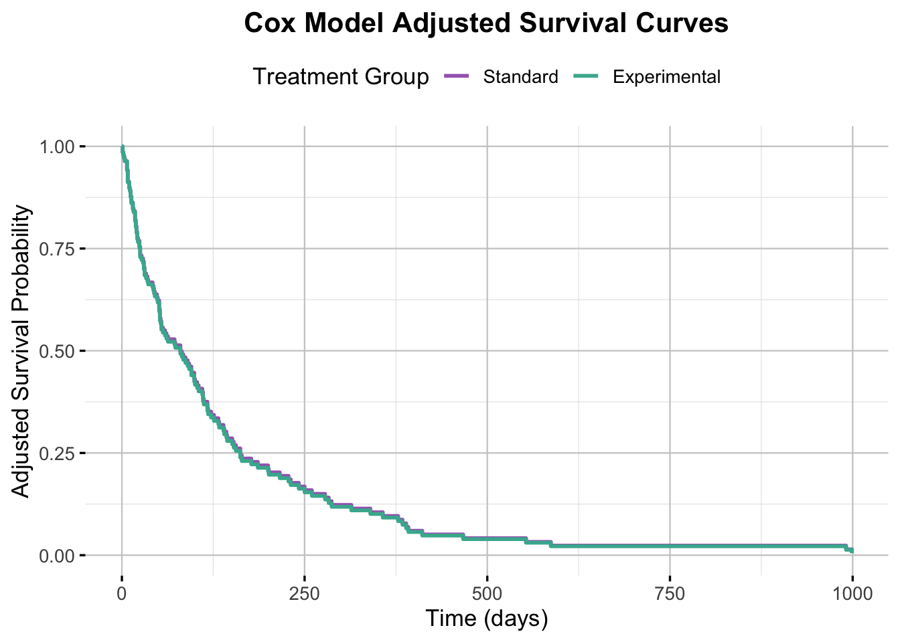
Interpretation of the Adjusted Survival Curves
The adjusted survival curves are nearly indistinguishable, which matches the hazard ratio from the treatment-only Cox model. This reinforces the earlier finding that the two treatment groups had very similar survival experience.
Model Diagnostics
Before relying on the Cox model, its main assumptions need to be checked. The most important issues here are proportional hazards and the functional form of continuous predictors. I use Schoenfeld residuals to assess proportional hazards, and Martingale residuals plus functional-form plots to assess whether continuous terms are specified appropriately.
Checking the Proportional Hazards Assumption
Schoenfeld Residuals
Schoenfeld residuals provide both a formal test and a visual check for the proportional hazards assumption. Large systematic trends over time would suggest that the treatment effect is not constant during follow-up.
Code
# Test the PH assumptioncox.zph(cox_model)
chisq df p
trt 3.54 1 0.06
GLOBAL 3.54 1 0.06
Interpretation of PH Assumption Test (Schoenfeld residuals)
The Schoenfeld test gives p = 0.06 for treatment and p = 0.06 globally. Both are just above the conventional 0.05 threshold, so there is no strong evidence against the proportional hazards assumption in this model.
Schoenfeld Residuals Plot
Code
plot(cox.zph(cox_model))
Schoenfeld Residuals Interpretation
The residual plot shows mild curvature, but no clear sustained trend over time, and the smooth remains within the confidence bands. Taken together with the formal test, this supports treating proportional hazards as a reasonable working assumption for the treatment-only model.
Martingale Residuals (for Functional Form of Covariates)
Martingale residuals are useful for checking whether continuous predictors have been modeled with an appropriate functional form. Clear curvature can indicate that a simple linear term is inadequate.
Code
# Generate Martingale residualsmartingale_resid <-residuals(cox_model, type ="martingale")# Add residuals to your dataveteran$martingale <- martingale_resid# Plot residuals against a continuous covariate (e.g., time or another variable)# Here we plot against the linear predictor for simplicityveteran$linear_pred <-predict(cox_model, type ="lp")ggplot(veteran, aes(x = linear_pred, y = martingale, color = trt)) +geom_point(alpha =0.6) +geom_hline(yintercept =0, linetype ="dashed", color ="grey30") +theme_minimal(base_size =13) +labs(title ="Martingale Residuals vs Linear Predictor",x ="Linear Predictor (Log Hazard)",y ="Martingale Residual",color ="Treatment Group" ) +scale_color_manual(values =c("Standard"="#A569BD", "Experimental"="#45B39D")) +theme(plot.title =element_text(hjust =0.5, face ="bold"))
Interpretation of Martingale Residuals Plot
The Martingale residual plot helps assess whether the model’s assumptions—particularly the functional form of covariates—are valid.
In this case, residuals were plotted against the linear predictor for a binary treatment variable. As expected, two vertical bands appear, corresponding to the Standard and Experimental groups. The residuals are roughly symmetric around zero within each group, with no obvious curvature or systematic pattern. This supports the adequacy of the treatment variable’s specification in the model and suggests that no transformation is needed for this binary covariate.
Additional Covariates
To improve the model and better account for variability in survival outcomes, we now include additional patient characteristics: age (a continuous variable) and prior treatment history (prior, a binary variable). Adding these covariates allows us to control for baseline differences between patients, assess their independent associations with survival, and explore whether they influence the effect of treatment.
4.2 Multivariable Models
To build on the univariable analysis of treatment effects, we next fit a multivariable Cox proportional hazards model that incorporates additional patient-level covariates. This allows us to estimate the effect of treatment on survival while adjusting for other potential prognostic factors, such as age and prior treatment history. By doing so, we account for potential confounding and improve the model’s explanatory power.
4.2.1 Continuous Variable: Age
Age is a clinically relevant predictor, so the next step is to check whether it adds useful information and whether a simple linear term is adequate.
Cox Model with Age
Code
cox_age <-coxph(Surv(time, status) ~ trt + age, data = veteran)summary(cox_age)
Call:
coxph(formula = Surv(time, status) ~ trt + age, data = veteran)
n= 137, number of events= 128
coef exp(coef) se(coef) z Pr(>|z|)
trtExperimental -0.003654 0.996352 0.182514 -0.020 0.984
age 0.007527 1.007556 0.009661 0.779 0.436
exp(coef) exp(-coef) lower .95 upper .95
trtExperimental 0.9964 1.0037 0.6967 1.425
age 1.0076 0.9925 0.9887 1.027
Concordance= 0.514 (se = 0.029 )
Likelihood ratio test= 0.63 on 2 df, p=0.7
Wald test = 0.62 on 2 df, p=0.7
Score (logrank) test = 0.62 on 2 df, p=0.7
Interpretation of the Cox Model with Age
Adding age to the treatment model does not materially change the result. The treatment effect remains close to null (HR = 1.00, 95% CI: 0.70–1.43, p = 0.984), and age itself shows only a weak association with hazard (HR = 1.01 per year, 95% CI: 0.99–1.03, p = 0.436). Model discrimination remains poor (concordance = 0.514), so this specification adds little explanatory value.
Schoenfeld Residuals for Age
Code
# Test proportional hazards assumption for the model including agecox_zph_age <-cox.zph(cox_age)print(cox_zph_age)
chisq df p
trt 3.67 1 0.055
age 1.68 1 0.195
GLOBAL 6.20 2 0.045
The proportional hazards check is mostly acceptable for this model. Age shows no evidence of non-proportionality (p = 0.195), while treatment is borderline (p = 0.055). The global test is also borderline (p = 0.045), so the result does not point to a clear violation, but it does justify checking the residual plots carefully.
Code
# Visual checkplot(cox_zph_age)
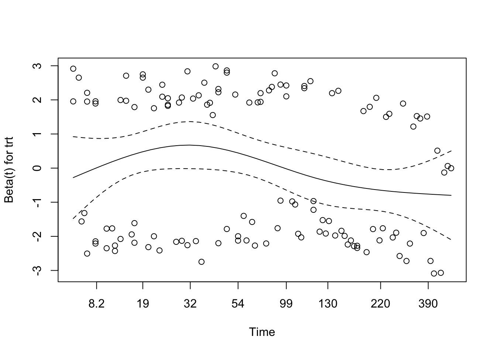
The residual plot for age is broadly flat over time, with the smooth staying close to zero and within the confidence bands. This supports treating the age effect as approximately time-constant in this model.
Martingale Residuals for Age to Assess Functional Form
Martingale residuals are used here to check whether age is adequately captured by a simple linear term.
Code
# Generate Martingale residualsveteran$martingale_age <-residuals(cox_age, type ="martingale")# Generate linear predictorveteran$linear_pred_age <-predict(cox_age, type ="lp")# Plot residuals against ageggplot(veteran, aes(x = age, y = martingale_age, color = trt)) +geom_point(alpha =0.6) +geom_hline(yintercept =0, linetype ="dashed", color ="grey30") +theme_minimal(base_size =13) +labs(title ="Martingale Residuals vs Age",x ="Age (years)",y ="Martingale Residual",color ="Treatment Group" ) +scale_color_manual(values =c("Standard"="#A569BD", "Experimental"="#45B39D")) +theme(plot.title =element_text(hjust =0.5, face ="bold"))
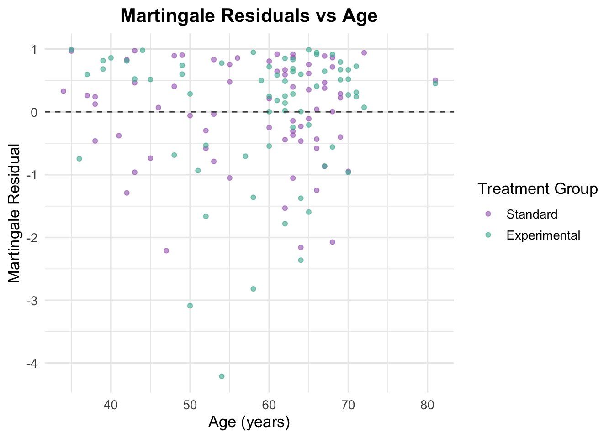
The simple residual plot does not show an obvious pattern, but the functional-form plot suggests some curvature. Taken together, these checks do not support a strong linear age effect, and they leave open the possibility that age is better represented with a more flexible term.
Functional Form Check
Code
# Fit a univariable Cox model to assess functional form of agecox_age_only <-coxph(Surv(time, status) ~ age, data = veteran)# Check the functional form visually using Martingale residualsggcoxfunctional(cox_age_only, data = veteran)
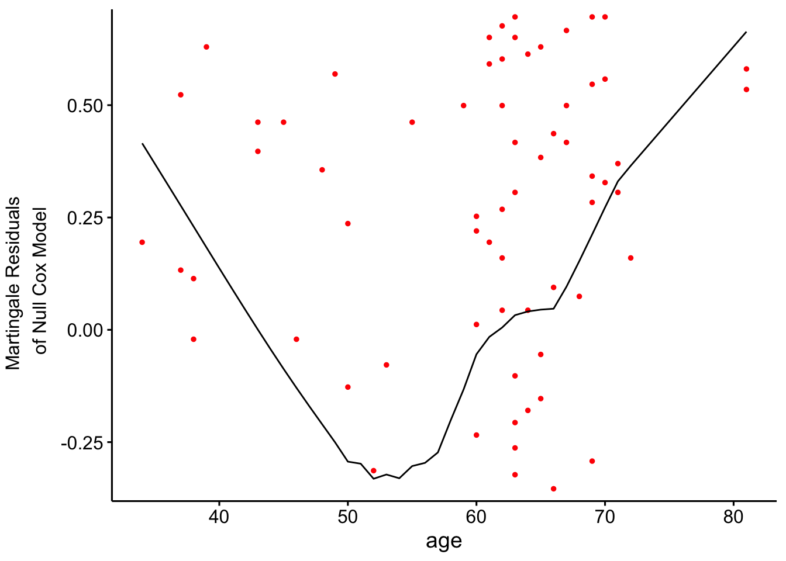
The smoothed functional-form plot suggests that age may not relate to the log hazard in a strictly linear way. The curve appears mildly U-shaped, which makes a spline-based specification worth testing in the next model.
4.2.2 Binary Variable: Prior Treatment
The next variable considered is prior therapy, included here as a binary marker of previous treatment before study entry.
Fit Cox Model with Prior Treatment
Code
# Fit the Cox model including prior treatmentcox_prior <-coxph(Surv(time, status) ~ trt + prior, data = veteran)summary(cox_prior)
Call:
coxph(formula = Surv(time, status) ~ trt + prior, data = veteran)
n= 137, number of events= 128
coef exp(coef) se(coef) z Pr(>|z|)
trtExperimental 0.02608 1.02643 0.18099 0.144 0.885
prior -0.01447 0.98563 0.02009 -0.720 0.471
exp(coef) exp(-coef) lower .95 upper .95
trtExperimental 1.0264 0.9743 0.7199 1.463
prior 0.9856 1.0146 0.9476 1.025
Concordance= 0.517 (se = 0.03 )
Likelihood ratio test= 0.54 on 2 df, p=0.8
Wald test = 0.53 on 2 df, p=0.8
Score (logrank) test = 0.53 on 2 df, p=0.8
Adding prior therapy does not improve the model. The treatment effect remains close to null (HR = 1.03, 95% CI: 0.72–1.46, p = 0.885), and prior therapy is also not associated with survival (HR = 0.99, p = 0.471). Concordance remains low at 0.517, so this model still offers very limited discrimination.
Schoenfeld Residuals for Prior Treatment
Code
# Test proportional hazards assumption for the model including prior treatmentcox_zph_prior <-cox.zph(cox_prior)print(cox_zph_prior)
chisq df p
trt 3.38 1 0.066
prior 3.04 1 0.081
GLOBAL 6.06 2 0.048
The global Schoenfeld test is borderline (p = 0.048), while the individual tests for treatment and prior therapy are both just above 0.05. This is enough to warrant caution, but not enough on its own to conclude that the proportional hazards assumption has clearly failed.
Code
# Visual checkplot(cox_zph_prior)
The residual plot for prior therapy is broadly flat, supporting a stable effect over time. Treatment shows more waviness, but not a strong enough pattern to argue for a clear violation on visual grounds.
Martingale Residuals for Prior Treatment
Code
# Generate Martingale residualsveteran$martingale_prior <-residuals(cox_prior, type ="martingale")# Generate linear predictorveteran$linear_pred_prior <-predict(cox_prior, type ="lp")# Plot residuals against prior treatmentggplot(veteran, aes(x = prior, y = martingale_prior, color = trt)) +geom_point(alpha =0.6) +geom_hline(yintercept =0, linetype ="dashed", color ="grey30") +theme_minimal(base_size =13) +labs(title ="Martingale Residuals vs Prior Treatment",x ="Prior Treatment (0 = No, 1 = Yes)",y ="Martingale Residual",color ="Treatment Group" ) +scale_color_manual(values =c("Standard"="#A569BD", "Experimental"="#45B39D")) +theme(plot.title =element_text(hjust =0.5, face ="bold")) +geom_point(position =position_jitter(width =0.1), alpha =0.6) # Adding jitter to avoid overlap
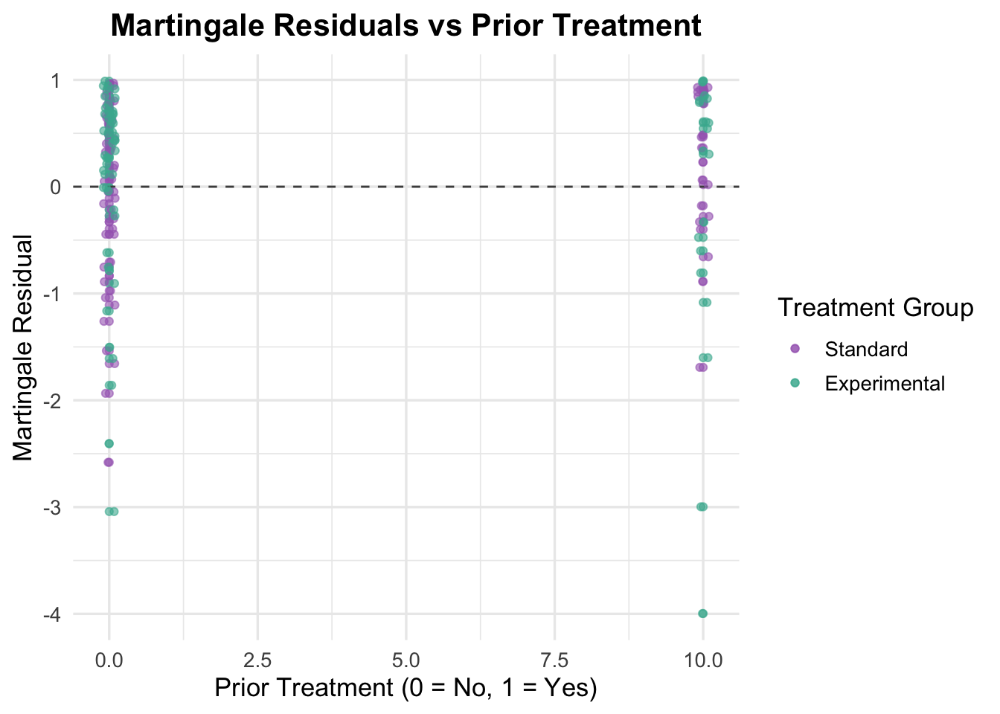
Because prior therapy is binary, the residual plot is mainly a check for obvious imbalance or misspecification rather than curvature. The residuals look broadly similar across the two groups, so the binary coding appears reasonable.
4.2.3 Multivariable Cox Model with Age and Prior Treatment
The next step is to fit a simple multivariable model with treatment, age, and prior therapy together.
Code
# Fit the multivariable Cox model including age and prior treatmentcox_multivariable <-coxph(Surv(time, status) ~ trt + age + prior, data = veteran)summary(cox_multivariable)
Call:
coxph(formula = Surv(time, status) ~ trt + age + prior, data = veteran)
n= 137, number of events= 128
coef exp(coef) se(coef) z Pr(>|z|)
trtExperimental 0.003621 1.003628 0.183151 0.020 0.984
age 0.007124 1.007149 0.009675 0.736 0.462
prior -0.013562 0.986529 0.020118 -0.674 0.500
exp(coef) exp(-coef) lower .95 upper .95
trtExperimental 1.0036 0.9964 0.7009 1.437
age 1.0071 0.9929 0.9882 1.026
prior 0.9865 1.0137 0.9484 1.026
Concordance= 0.507 (se = 0.03 )
Likelihood ratio test= 1.09 on 3 df, p=0.8
Wald test = 1.07 on 3 df, p=0.8
Score (logrank) test = 1.07 on 3 df, p=0.8
This model does not materially improve on the earlier ones. Treatment remains null (HR = 1.00, p = 0.984), age remains weak (p = 0.462), and prior therapy remains uninformative (p = 0.500). Concordance is 0.507, confirming that these variables alone do little to explain survival in this dataset.
Schoenfeld Residuals for Multivariable Model
Code
# Test proportional hazards assumption for the multivariable modelcox_zph_multivariable <-cox.zph(cox_multivariable)print(cox_zph_multivariable)
chisq df p
trt 3.53 1 0.060
age 1.76 1 0.184
prior 3.19 1 0.074
GLOBAL 8.80 3 0.032
The global Schoenfeld test is significant (p = 0.032), although none of the individual covariates crosses the 0.05 threshold. That pattern suggests some model instability, but not a clear time-varying effect for any single term.
Code
# Visual checkplot(cox_zph_multivariable)
The residual plots are broadly reassuring. Age is especially stable, while treatment and prior therapy show mild undulation but no strong sustained trends. Taken together, the plots suggest that proportional hazards is a workable assumption for this model, even if the global test is mildly concerning.
Martingale Residuals for Multivariable Model
Code
# Generate Martingale residualsveteran$martingale_multivariable <-residuals(cox_multivariable, type ="martingale")# Generate linear predictorveteran$linear_pred_multivariable <-predict(cox_multivariable, type ="lp")# Plot residuals against linear predictorggplot(veteran, aes(x = linear_pred_multivariable, y = martingale_multivariable, color = trt)) +geom_point(alpha =0.6) +geom_hline(yintercept =0, linetype ="dashed", color ="grey30") +theme_minimal(base_size =13) +labs(title ="Martingale Residuals vs Linear Predictor\n(Multivariable Model)",x ="Linear Predictor (Log Hazard)",y ="Martingale Residual",color ="Treatment Group" ) +scale_color_manual(values =c("Standard"="#A569BD", "Experimental"="#45B39D")) +theme(plot.title =element_text(hjust =0.5, face ="bold"))
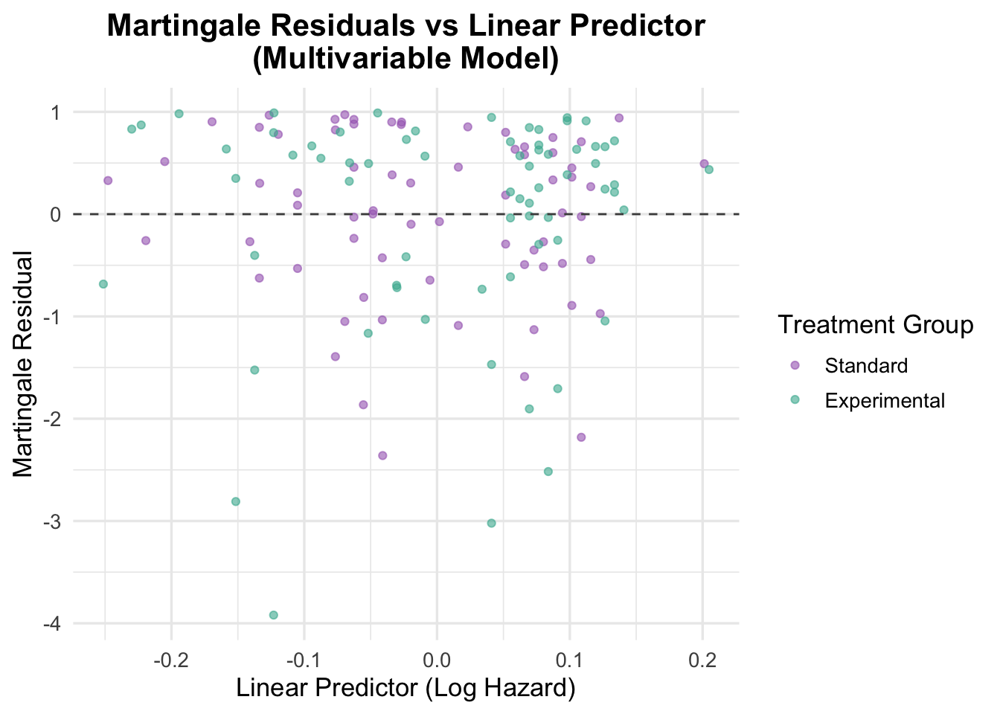
The Martingale residuals versus the linear predictor show no strong pattern, which argues against major misspecification in the combined linear predictor. That said, the narrow spread of predicted values reflects the same issue seen in the coefficients: this model has limited ability to separate higher-risk from lower-risk patients.
Functional Form Check for Continuous Covariates
Code
# Refit a univariable model with age (again, for functional form check)cox_age_for_form_check <-coxph(Surv(time, status) ~ age, data = veteran)# Plot functional form using ggcoxfunctionalggcoxfunctional(fit = cox_age_for_form_check,data = veteran,point.col ="#E74C3C",ggtheme =theme_minimal(base_size =13),title ="Functional Form Check: Age")
The functional-form plot for age again suggests curvature rather than a clean linear relationship. That makes age the main candidate for a more flexible specification in the next model.
4.2.4 Multivariable Cox Model with Spline-Transformed Age
Given the repeated signs that age may not be linear on the log-hazard scale, the model is refit with age represented using a natural spline.
Model Output
Code
# Fit a Cox model with a natural spline for agecox_spline <-coxph(Surv(time, status) ~ns(age, df =3) + trt + prior, data = veteran)summary(cox_spline)
Using a spline for age improves flexibility, but does not immediately transform the model. The treatment and prior-therapy terms remain uninformative, and the individual spline terms are not especially strong on their own. Even so, concordance improves slightly to 0.559, and the spline specification is more consistent with the functional-form checks.
Schoenfeld Residuals for Spline Model
Code
# Test proportional hazards assumption for the spline modelcox.zph(cox_spline)
chisq df p
ns(age, df = 3) 4.52 3 0.211
trt 2.50 1 0.114
prior 3.08 1 0.079
GLOBAL 8.84 5 0.116
The spline model shows no clear proportional hazards problem. The global test is non-significant (p = 0.116), and the individual terms also look acceptable.
Code
# Visual check of Schoenfeld residuals for spline modelplot(cox.zph(cox_spline))
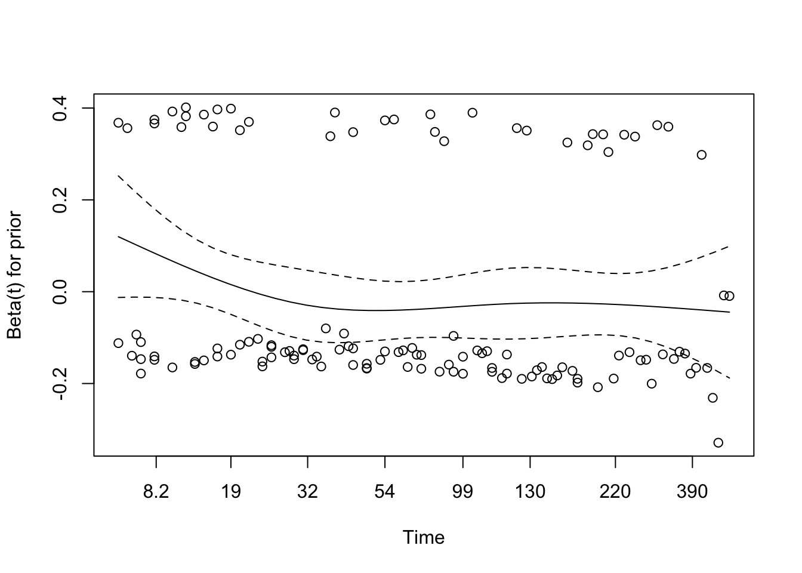
The residual plots for the spline model are more reassuring overall. None of the terms shows a strong or sustained time trend, so proportional hazards looks more comfortable here than in the simpler age models.
Martingale Residuals for Spline Model
Code
# Residuals vs linear predictorveteran$martingale_spline <-residuals(cox_spline, type ="martingale")veteran$linear_pred_spline <-predict(cox_spline, type ="lp")ggplot(veteran, aes(x = linear_pred_spline, y = martingale_spline, color = trt)) +geom_point(alpha =0.6) +geom_hline(yintercept =0, linetype ="dashed", color ="grey30") +theme_minimal(base_size =13) +labs(title ="Martingale Residuals vs Linear Predictor\n(Spline Model)",x ="Linear Predictor (Log Hazard)",y ="Martingale Residual",color ="Treatment Group" ) +scale_color_manual(values =c("Standard"="#A569BD", "Experimental"="#45B39D")) +theme(plot.title =element_text(hjust =0.5, face ="bold"))
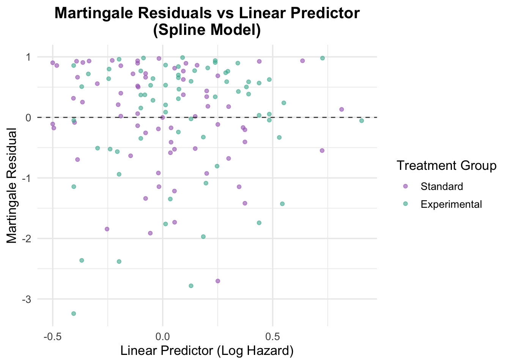
The residuals against the linear predictor look broadly patternless, which suggests the spline model has addressed the main functional-form concern without introducing obvious new misspecification.
4.2.5 Model Comparison: Linear vs Spline Age Term
We now compare the original multivariable Cox model with age modeled linearly to the updated model using a spline transformation for age. This allows us to formally test whether the added flexibility of the spline significantly improves model fit.
Code
# Compare linear age model vs spline-transformed age modelanova(cox_multivariable, cox_spline, test ="LRT")
Analysis of Deviance Table
Cox model: response is Surv(time, status)
Model 1: ~ trt + age + prior
Model 2: ~ ns(age, df = 3) + trt + prior
loglik Chisq Df Pr(>|Chi|)
1 -504.90
2 -500.95 7.9117 2 0.01914 *
---
Signif. codes: 0 '***' 0.001 '**' 0.01 '*' 0.05 '.' 0.1 ' ' 1
A likelihood ratio test comparing the linear and spline age models shows that the spline specification fits better (χ² = 7.91, df = 2, p = 0.019). That is good evidence that age is better treated as a non-linear predictor in this analysis.
Visualizing the Effect of Spline-Transformed Age
This section uses ‘termplot()’ to visualize how the hazard changes across age when modeled as a spline. This provides an intuitive look at the non-linear relationship.
Code
termplot(cox_spline, se =TRUE, col.term ="blue")
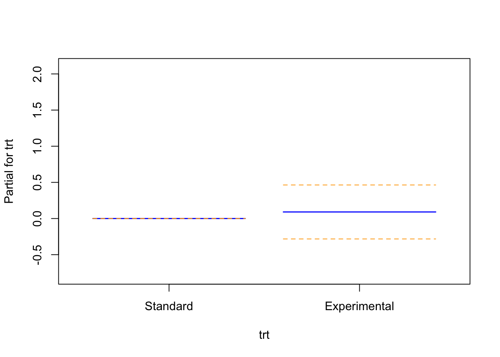
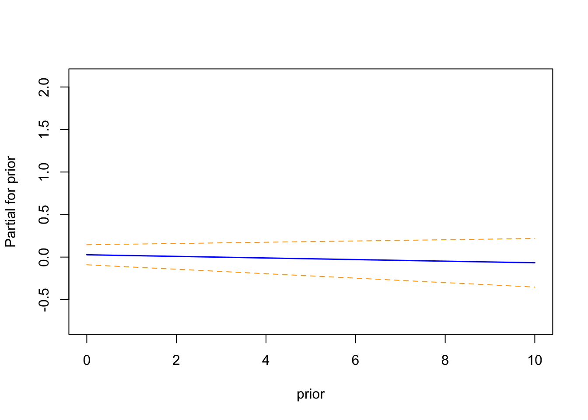
The term plots from the spline-based Cox proportional hazards model illustrate the partial effect of each covariate on the log hazard:
Age (modeled using a natural spline with 3 degrees of freedom) exhibits a non-linear association with the log hazard. The curve displays a shallow U-shape, with the lowest hazard around age 55, and a gradual increase in hazard at both younger and older ages. While the trend is suggestive, the wide confidence intervals—particularly at the distribution tails—indicate uncertainty in the precise shape of this relationship.
Treatment Group (trt) is represented as a binary variable with two flat lines, one for each group. The narrow confidence intervals overlap with zero, implying no statistically significant difference in log hazard between the intervention and control arms in this model.
Prior Treatment (prior) also shows a flat trend across the range of prior treatments, with confidence bands consistently containing zero. This suggests that the number of prior therapies does not contribute meaningfully to hazard estimation when adjusting for age and treatment.
These visualizations support the statistical findings from the model summary. Age is the only covariate showing a potentially complex, non-linear effect, while treatment and prior exposure show no clear independent impact on survival in this cohort.
4.2.6 Multivariable Cox Model with Karnofsky Score and Cell Type
Having established that spline-transformed age improves model fit, we now extend the model to include Karnofsky performance score and tumour cell type — two clinically important variables that were not included in earlier models. Karnofsky score is a widely used measure of functional status and is one of the strongest prognostic factors in oncology. Cell type captures the histological character of each patient’s tumour, which is known to influence prognosis in lung cancer independently of treatment.
Code
# Fit a multivariable Cox model including Karnofsky score and Cell Typecox_karno_and_cell <-coxph(Surv(time, status) ~ns(age, df =3) + trt + prior + karno + celltype,data = veteran)summary(cox_karno_and_cell)
A multivariable Cox proportional hazards model was fitted including spline-transformed age (df = 3), treatment group, prior therapy, Karnofsky performance score, and tumour cell type. The model included 137 patients and 128 events.
Karnofsky score was the strongest independent predictor of survival. Each 1-point increase in score was associated with a 3.4% reduction in the hazard of death (HR = 0.966, 95% CI: 0.955–0.977, p < 0.001).
Cell type was significantly associated with survival. Compared to squamous cell carcinoma (reference), patients with small cell carcinoma had a 2.2-fold increased hazard (HR = 2.21, 95% CI: 1.31–3.75, p = 0.003) and adenocarcinoma patients had a 3.3-fold increased hazard (HR = 3.30, 95% CI: 1.82–5.96, p < 0.001). Large cell carcinoma was not significantly different from squamous (HR = 1.40, p = 0.233).
Treatment group was not statistically significant after adjusting for functional status and cell type (HR = 1.40, 95% CI: 0.94–2.09, p = 0.097), though the hazard ratio trended toward harm in the experimental arm.
Prior therapy was not associated with survival (HR = 1.01, p = 0.658).
Spline-transformed age showed evidence of a non-linear association with survival. The second spline term reached statistical significance (HR = 0.098, p = 0.025), consistent with the earlier functional form analysis.
Overall model performance was substantially improved: concordance = 0.735, compared to 0.559 for the model without Karnofsky and cell type. The likelihood ratio, Wald, and score tests were all highly significant (p < 0.001).
The Kaplan-Meier curves stratified by Karnofsky score group confirm the strong prognostic gradient seen in the Cox model. Patients with high functional status (Karnofsky > 70) had substantially longer median survival than those in the low group (Karnofsky ≤ 50), with the log-rank test confirming a highly significant difference across groups.
Survival curves by cell type show clear separation, particularly between squamous cell carcinoma and the adenocarcinoma and small cell groups. The log-rank test confirms a significant difference across histological subtypes, consistent with the hazard ratios estimated in the Cox model.
chisq df p
ns(age, df = 3) 0.906 3 0.82403
trt 0.387 1 0.53381
prior 1.979 1 0.15945
karno 15.547 1 8.0e-05
celltype 16.367 3 0.00095
GLOBAL 34.195 9 8.3e-05
Code
plot(cox_zph_final)
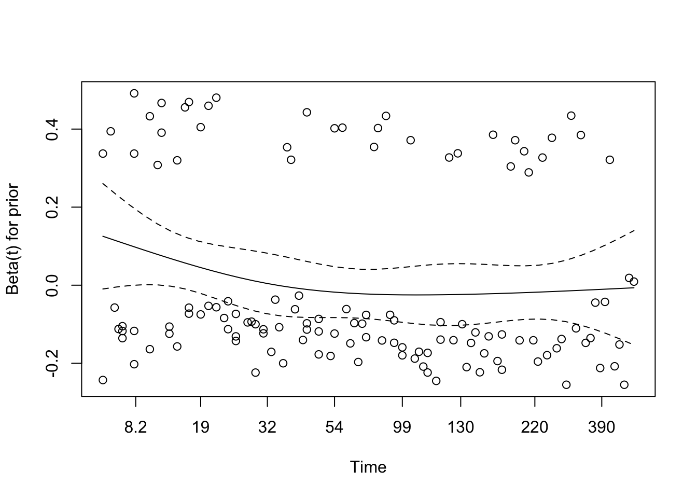
The proportional hazards assumption was assessed via Schoenfeld residuals. None of the individual covariates reached statistical significance, and the global test was non-significant, providing no compelling evidence against the proportional hazards assumption for any term in the final model. Visual inspection of the Schoenfeld residual plots showed broadly flat smoothed trends with no systematic drift over time.
Martingale Residuals
Code
veteran$martingale_final <-residuals(cox_karno_and_cell, type ="martingale")veteran$linear_pred_final <-predict(cox_karno_and_cell, type ="lp")ggplot(veteran, aes(x = linear_pred_final, y = martingale_final, color = trt)) +geom_point(alpha =0.6) +geom_hline(yintercept =0, linetype ="dashed", color ="grey30") +theme_minimal(base_size =13) +labs(title ="Martingale Residuals vs Linear Predictor (Final Model)",x ="Linear Predictor (Log Hazard)",y ="Martingale Residual",color ="Treatment Group" ) +scale_color_manual(values =c("Standard"="#A569BD", "Experimental"="#45B39D")) +theme(plot.title =element_text(hjust =0.5, face ="bold"))
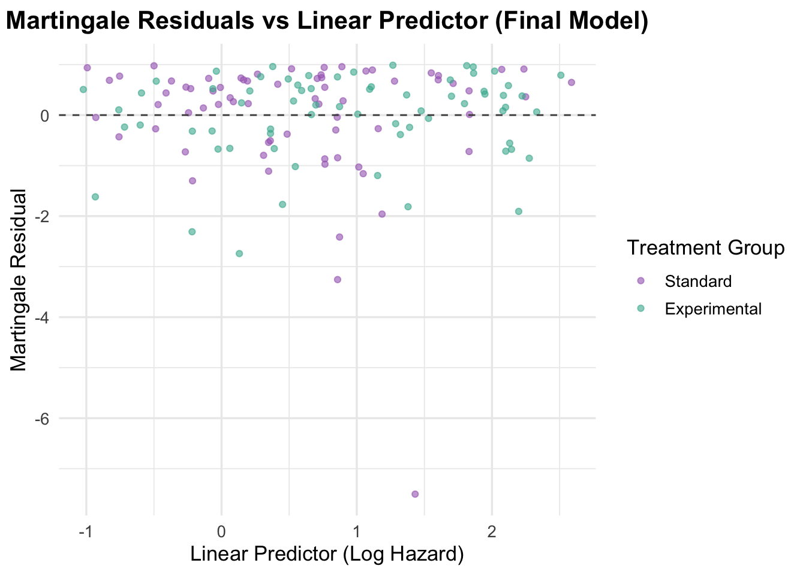
Martingale residuals plotted against the linear predictor show random scatter around zero with no systematic curvature, supporting adequate overall model specification. The linear predictor now spans a wider range than the earlier model, reflecting the stronger prognostic signal contributed by Karnofsky score and cell type. No major outliers or influential observations are apparent.
Functional Form Check: Karnofsky Score
Code
cox_karno_for_form_check <-coxph(Surv(time, status) ~ karno, data = veteran)ggcoxfunctional(fit = cox_karno_for_form_check,data = veteran,point.col ="#E74C3C",ggtheme =theme_minimal(base_size =13),title ="Functional Form Check: Karnofsky Score")
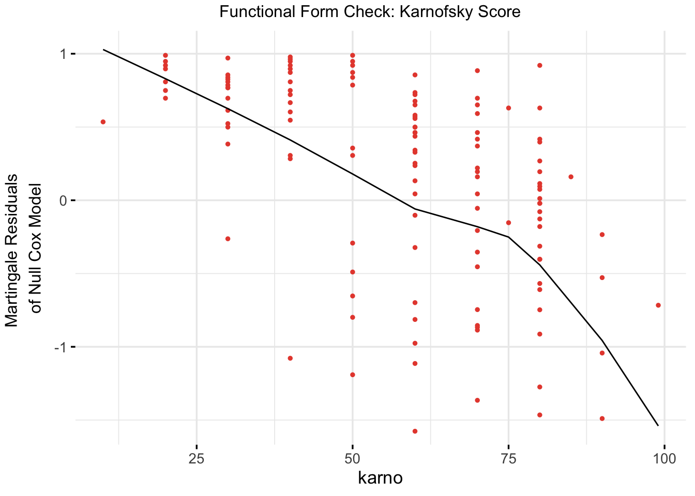
The Martingale residual plot for Karnofsky score shows a broadly linear decreasing trend, supporting its inclusion as a continuous linear predictor. No threshold or non-monotonic pattern is apparent that would require a spline transformation, in contrast to age.
5 Interaction or Additive Effects?
In Cox regression, interaction terms allow us to test whether the effect of one covariate on the hazard changes depending on the level of another covariate. If significant, this suggests a departure from simple additivity and may require stratified or more complex modelling.
5.1 Interaction of Treatment and Age
Code
# Fit a cox model with interaction between treatment and age cox_interaction <-coxph(Surv(time, status) ~ trt *ns(age, df =3) + prior, data = veteran)summary(cox_interaction)
We tested for interaction between treatment group and age (modeled using a natural spline with 3 degrees of freedom) to explore whether the effect of treatment on survival varied across age groups. The interaction model revealed a statistically significant interaction for the second spline basis term (p = 0.037), suggesting a possible age-dependent treatment effect.
The overall Wald test for the model approached significance (p = 0.05), while the likelihood ratio test was marginal (p = 0.07), indicating that the model with interaction terms may provide a better fit than the additive model. These findings suggest that the benefit (or lack thereof) of treatment may differ depending on patient age, warranting further exploration or stratified modelling.
Schoenfeld Residuals for Interaction Model
Code
# Test proportional hazards assumption for the interaction modelcox.zph(cox_interaction)
chisq df p
trt 1.39 1 0.24
ns(age, df = 3) 3.90 3 0.27
prior 2.42 1 0.12
trt:ns(age, df = 3) 5.37 3 0.15
GLOBAL 8.94 8 0.35
The Schoenfeld residual test was used to assess whether the proportional hazards assumption holds for each covariate and interaction term in the model.
trt: χ² = 1.39, p = 0.24 → No evidence of time-varying effects for treatment group.
ns(age, df = 3): χ² = 3.90, p = 0.27 → The spline-transformed age term shows no strong time dependency.
prior: χ² = 2.42, p = 0.12 → Also not statistically significant.
trt × ns(age, df = 3): χ² = 5.37, p = 0.15 → The interaction between age and treatment shows no significant violation of proportionality either.
GLOBAL test: χ² = 8.94 on 8 df, p = 0.35 → The model as a whole satisfies the PH assumption.
There is no strong evidence that the proportional hazards assumption is violated in this interaction model. The covariate effects, including the interaction, appear stable over time.
Code
# Visual check of Schoenfeld residuals for interaction modelplot(cox.zph(cox_interaction))
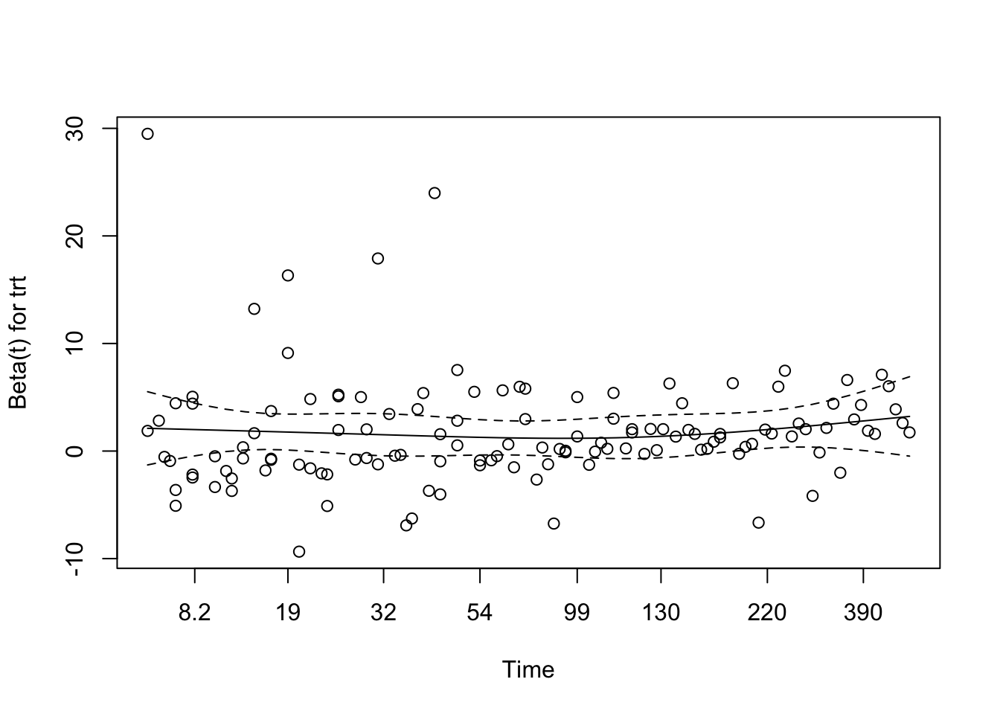
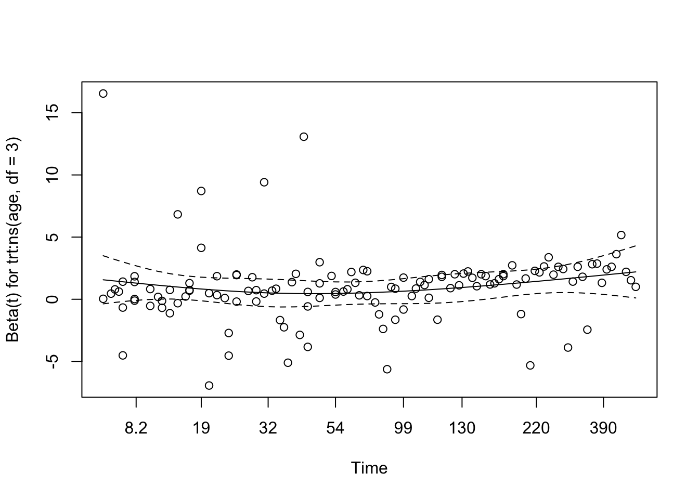
The interaction model does not show a clear proportional hazards problem. The global Schoenfeld test is non-significant (p = 0.35), and the residual plots do not show sustained time trends for the treatment, age, or interaction terms.
Martingale Residuals for Interaction Model
Code
# Residuals vs linear predictorveteran$martingale_interaction <-residuals(cox_interaction, type ="martingale")veteran$linear_pred_interaction <-predict(cox_interaction, type ="lp")ggplot(veteran, aes(x = linear_pred_interaction, y = martingale_interaction, color = trt)) +geom_point(alpha =0.6) +geom_hline(yintercept =0, linetype ="dashed", color ="grey30") +theme_minimal(base_size =13) +labs(title ="Martingale Residuals vs Linear Predictor\n(Interaction Model)",x ="Linear Predictor (Log Hazard)",y ="Martingale Residual",color ="Treatment Group" ) +scale_color_manual(values =c("Standard"="#A569BD", "Experimental"="#45B39D")) +theme(plot.title =element_text(hjust =0.5, face ="bold"))
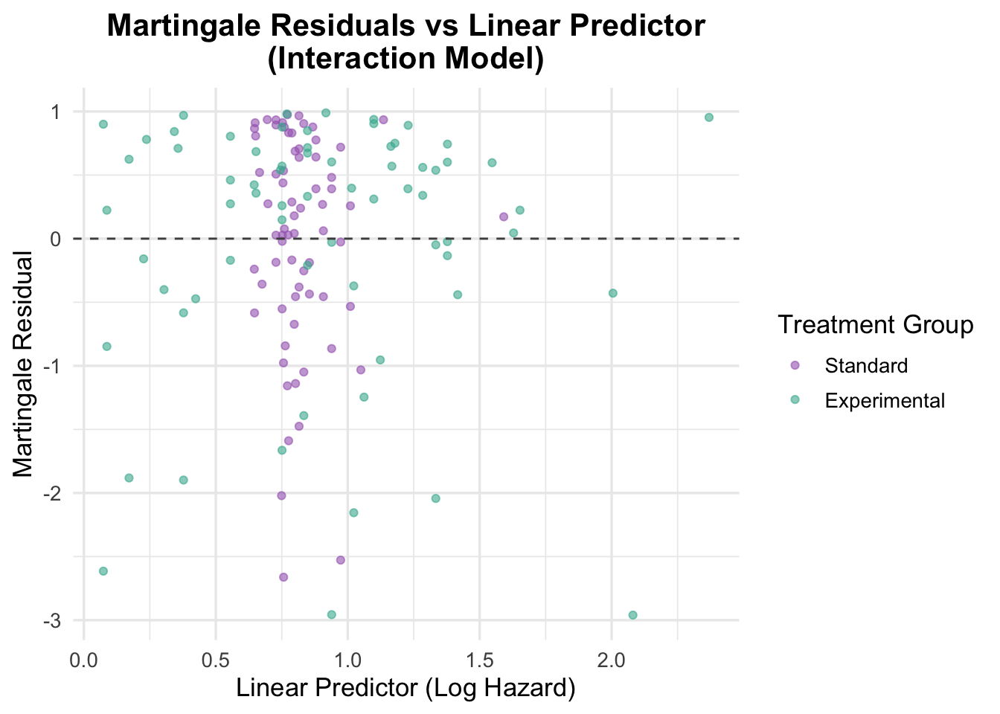
The Martingale residuals are scattered without obvious structure, suggesting that the interaction model is not suffering from major misspecification.
Deviance Residuals for Interaction Model
Code
# Deviance residualsveteran$deviance_interaction <-residuals(cox_interaction, type ="deviance")# Plot deviance residualsggplot(veteran, aes(x = linear_pred_interaction, y = deviance_interaction, color = trt)) +geom_point(position =position_jitter(width =0.1), alpha =0.6) +# Adding jitter to avoid overlapgeom_hline(yintercept =0, linetype ="dashed", color ="grey30") +theme_minimal(base_size =13) +labs(title ="Deviance Residuals vs Linear Predictor\n(Interaction Model)",x ="Linear Predictor (Log Hazard)",y ="Deviance Residual",color ="Treatment Group" ) +scale_color_manual(values =c("Standard"="#A569BD", "Experimental"="#45B39D")) +theme(plot.title =element_text(hjust =0.5, face ="bold"))
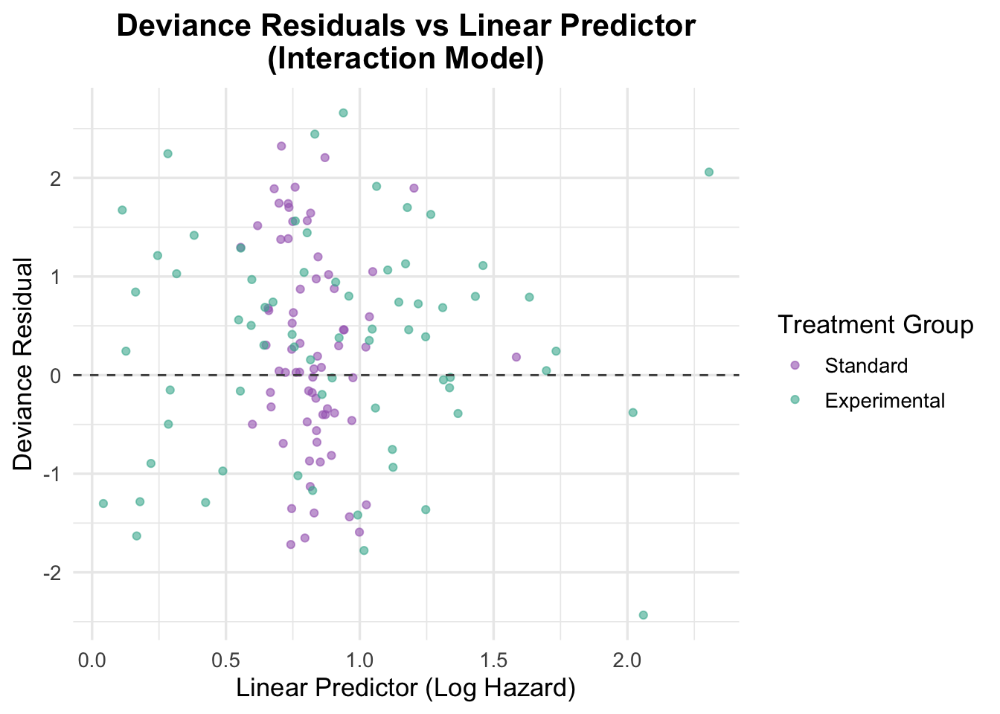
The deviance residuals are also broadly reassuring. Residuals are scattered around zero with no clear trend, suggesting that the interaction model fits the data reasonably well. That said, the model is more complex than the additive alternative and does not deliver a clearly better substantive interpretation.
5.2 Interaction of Treatment and Prior Therapy
Prior treatments might alter a patient’s response to new therapies.
Code
# Fit a cox model with interaction between treatment and prior therapycox_interaction_prior <-coxph(Surv(time, status) ~ trt * prior +ns(age, df =3), data = veteran)summary(cox_interaction_prior)
A treatment-by-prior-therapy interaction was tested to assess whether previous treatment modified the effect of the experimental regimen. The interaction term was not statistically convincing (HR = 0.94, 95% CI: 0.87–1.02, p = 0.135), and the model offered only weak evidence of improvement overall.
Schoenfeld Residuals for Interaction with Prior Therapy
Code
# Test proportional hazards assumption for the interaction with prior therapycox.zph(cox_interaction_prior)
chisq df p
trt 2.14 1 0.144
prior 2.71 1 0.100
ns(age, df = 3) 4.63 3 0.201
trt:prior 3.70 1 0.054
GLOBAL 9.04 6 0.171
Diagnostics were broadly acceptable. The global Schoenfeld test was non-significant (p = 0.171), and although the interaction term was borderline (p = 0.054), the evidence for time-varying effects is weak.
Code
# Visual check of Schoenfeld residuals for interaction with prior therapyplot(cox.zph(cox_interaction_prior))
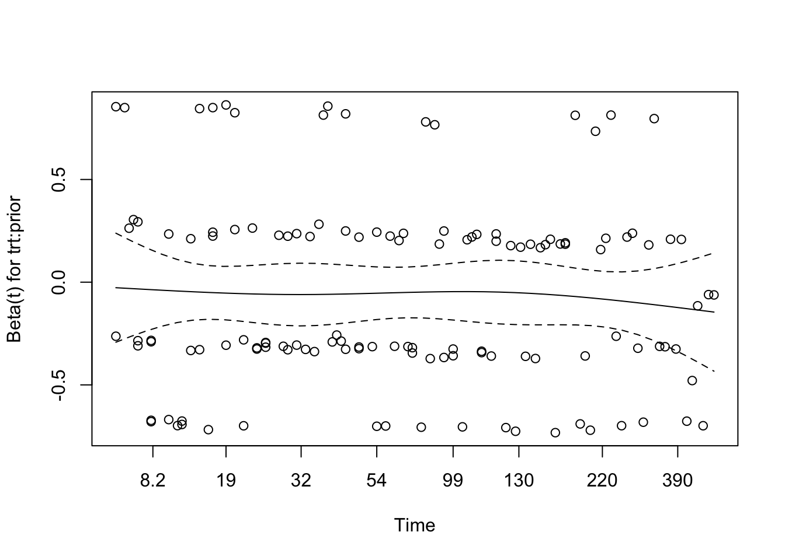
The residual plots do not show a clear or systematic time trend, so there is no strong visual evidence against the proportional hazards assumption for this interaction model.
Martingale Residuals for Interaction with Prior Therapy
Code
# Residuals vs linear predictorveteran$martingale_interaction_prior <-residuals(cox_interaction_prior, type ="martingale")veteran$linear_pred_interaction_prior <-predict(cox_interaction_prior, type ="lp")ggplot(veteran, aes(x = linear_pred_interaction_prior, y = martingale_interaction_prior, color = trt)) +geom_point(alpha =0.6) +geom_hline(yintercept =0, linetype ="dashed", color ="grey30") +theme_minimal(base_size =13) +labs(title ="Martingale Residuals vs Linear Predictor\n(Interaction with Prior Therapy)",x ="Linear Predictor (Log Hazard)",y ="Martingale Residual",color ="Treatment Group" ) +scale_color_manual(values =c("Standard"="#A569BD", "Experimental"="#45B39D")) +theme(plot.title =element_text(hjust =0.5, face ="bold"))
The Martingale residuals do not show a strong non-random pattern, which supports the adequacy of the covariate specification, including the interaction term. As in earlier models, there is substantial scatter, but no clear sign of systematic misspecification.
Deviance Residuals for Interaction with Prior Therapy
Code
# Deviance residualsveteran$deviance_interaction_prior <-residuals(cox_interaction_prior, type ="deviance")# Plot deviance residualsggplot(veteran, aes(x = linear_pred_interaction_prior, y = deviance_interaction_prior, color = trt)) +geom_point(position =position_jitter(width =0.1), alpha =0.6) +# Adding jitter to avoid overlapgeom_hline(yintercept =0, linetype ="dashed", color ="grey30") +theme_minimal(base_size =13) +labs(title ="Deviance Residuals vs Linear Predictor\n(Interaction with Prior Therapy)",x ="Linear Predictor (Log Hazard)",y ="Deviance Residual",color ="Treatment Group" ) +scale_color_manual(values =c("Standard"="#A569BD", "Experimental"="#45B39D")) +theme(plot.title =element_text(hjust =0.5, face ="bold"))
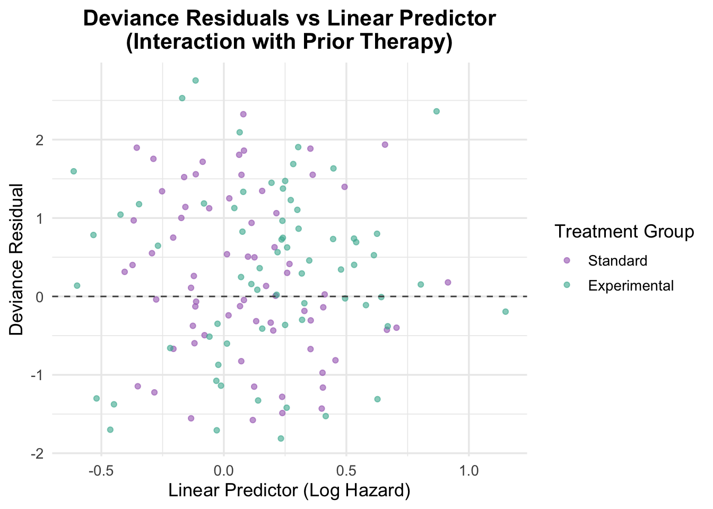
The deviance residual plot offers no strong evidence of model misfit. Residuals are scattered fairly symmetrically around zero, which is consistent with an adequate fit, but the model still does not add enough value to justify keeping the interaction.
6 Model Comparison: Interaction vs Non-Interaction
Two interaction models were explored: treatment by age and treatment by prior therapy. The treatment-by-age model showed some signal, but the improvement in overall fit was modest and did not materially change the interpretation of the analysis. The treatment-by-prior-therapy interaction was weaker and not statistically convincing.
Neither interaction improved the model enough to offset the added complexity, so the additive model was retained as the final specification.
7 Final Model Selection and Interpretation
After evaluating a sequence of Cox proportional hazards models — from univariable models for each covariate individually, through multivariable models of increasing complexity, to interaction models — the final selected model is:
Karnofsky score and cell type were included on clinical grounds. Karnofsky performance score is the dominant prognostic factor in oncology; cell type defines biologically distinct lung cancer subtypes with very different natural histories. Both were confirmed as strong independent predictors in the multivariable model.
Age was retained and modeled using a natural cubic spline (df = 3) following a functional form check that revealed a non-linear relationship with the log hazard. A likelihood ratio test confirmed the spline specification provided a significantly better fit than a linear age term (χ² = 7.91, df = 2, p = 0.019).
Prior therapy was retained as a standard adjustment covariate in the RCT context. It was not statistically significant (HR = 1.01, p = 0.658) but its inclusion is clinically justified and does not meaningfully alter other estimates.
Interaction terms (treatment × age, treatment × prior therapy) were explored but neither provided a meaningful or significant improvement in model fit. Neither was retained in the final model.
diagtime was not included. It was non-significant and its interpretation as a predictor is clinically ambiguous in this context.
Interpretation of the Final Model
After adjustment for the other covariates, the experimental chemotherapy regimen was not associated with improved survival relative to standard treatment (HR = 1.40, 95% CI: 0.94–2.09, p = 0.097). This is consistent with the earlier unadjusted comparison.
The strongest predictor in the model is Karnofsky performance score: each 1-point increase is associated with a 3.4% reduction in the hazard of death (HR = 0.966, 95% CI: 0.955–0.977, p < 0.001). Tumour cell type is also important. Relative to squamous cell carcinoma, both small cell carcinoma (HR = 2.21, p = 0.003) and adenocarcinoma (HR = 3.30, p < 0.001) are associated with substantially higher hazard, while large cell carcinoma is not clearly different from squamous.
Age is better represented non-linearly than with a simple linear term, but its overall contribution is modest. Prior therapy does not appear to be an independent predictor of survival in the adjusted model.
Overall Model Performance
The final model achieved a concordance index of 0.735, a clear improvement over the simpler models based only on treatment, age, and prior therapy. Likelihood ratio, Wald, and score tests were all strongly significant (p < 0.001), and the proportional hazards diagnostics did not indicate a major assumption problem.
8 Conclusion
This analysis examined survival in 137 male veterans with advanced, inoperable lung cancer enrolled in a randomised trial of standard versus experimental chemotherapy. Across a sequence of Cox models, the main finding was consistent: the experimental treatment did not improve survival.
The clearest predictors of outcome were baseline functional status and tumour cell type. Higher Karnofsky scores were associated with lower hazard, while adenocarcinoma and small cell carcinoma were associated with worse prognosis than squamous cell carcinoma. Age showed some evidence of a non-linear association with hazard, but its contribution was modest, and prior therapy was not independently informative.
Overall, the final model performed well enough to capture meaningful risk differences in the cohort, while remaining interpretable and diagnostically sound.
9 Limitations
Sample size and generalisability. The dataset comprises 137 patients from a single trial, which constrains statistical power for detecting modest treatment effects and limits the precision of subgroup estimates. The small cell carcinoma and adenocarcinoma groups in particular have relatively few patients, making their hazard ratio estimates less stable.
All-male cohort. All participants were male veterans. Lung cancer biology, treatment response, and prognosis differ between sexes, so findings cannot be assumed to generalise to female patients.
Historical data. The trial was conducted in the 1970s–80s. Neither the experimental treatment nor the standard regimen reflects current clinical practice, and the trial predates targeted therapy, immunotherapy, and modern platinum-based regimens.
Event rate and censoring. With 128 deaths among 137 patients (93.4%), this dataset has very limited censoring. Survival estimates at longer time points are based on very few at-risk individuals.
No external validation. Model performance (concordance = 0.735) was assessed on the same data used to fit the model. Without an independent validation cohort, this estimate is likely optimistic.
Residual confounding. Unmeasured factors — such as comorbidities, disease stage, smoking history, or treatment compliance — may confound the observed associations.
Interaction exploration was limited. Only two interaction terms were tested. Clinically meaningful interactions between other covariates (e.g., treatment × cell type) were not explored.